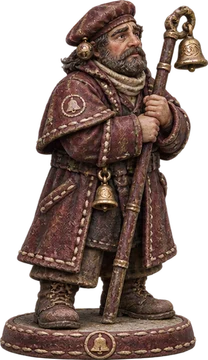
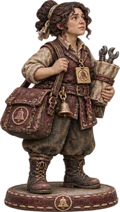

После последнего раунда
Карты и фигурки ведущего
Игровой комплект
3 игрока · 4 игрока · 5 игроков · 6 игроков · 7 игроков · 8 игроков
Карта кампании

Поля боя


Герои


Персонажи ведущего


Противники


Взрослый сторож залов 1Взрослый сторож залов 2Взрослый сторож залов 6Взрослый сторож залов 4Взрослый сторож залов 3Взрослый сторож залов 5

Взрослый переносчик заказов 3Взрослый переносчик заказов 5Взрослый переносчик заказов 2Взрослый переносчик заказов 1Взрослый переносчик заказов 6Взрослый переносчик заказов 4 Взрослый сопровождающий кабинета 3Взрослый сопровождающий кабинета 1Взрослый сопровождающий кабинета 5Взрослый сопровождающий кабинета 4Взрослый сопровождающий кабинета 6Взрослый сопровождающий кабинета 2
Взрослый сопровождающий кабинета 3Взрослый сопровождающий кабинета 1Взрослый сопровождающий кабинета 5Взрослый сопровождающий кабинета 4Взрослый сопровождающий кабинета 6Взрослый сопровождающий кабинета 2